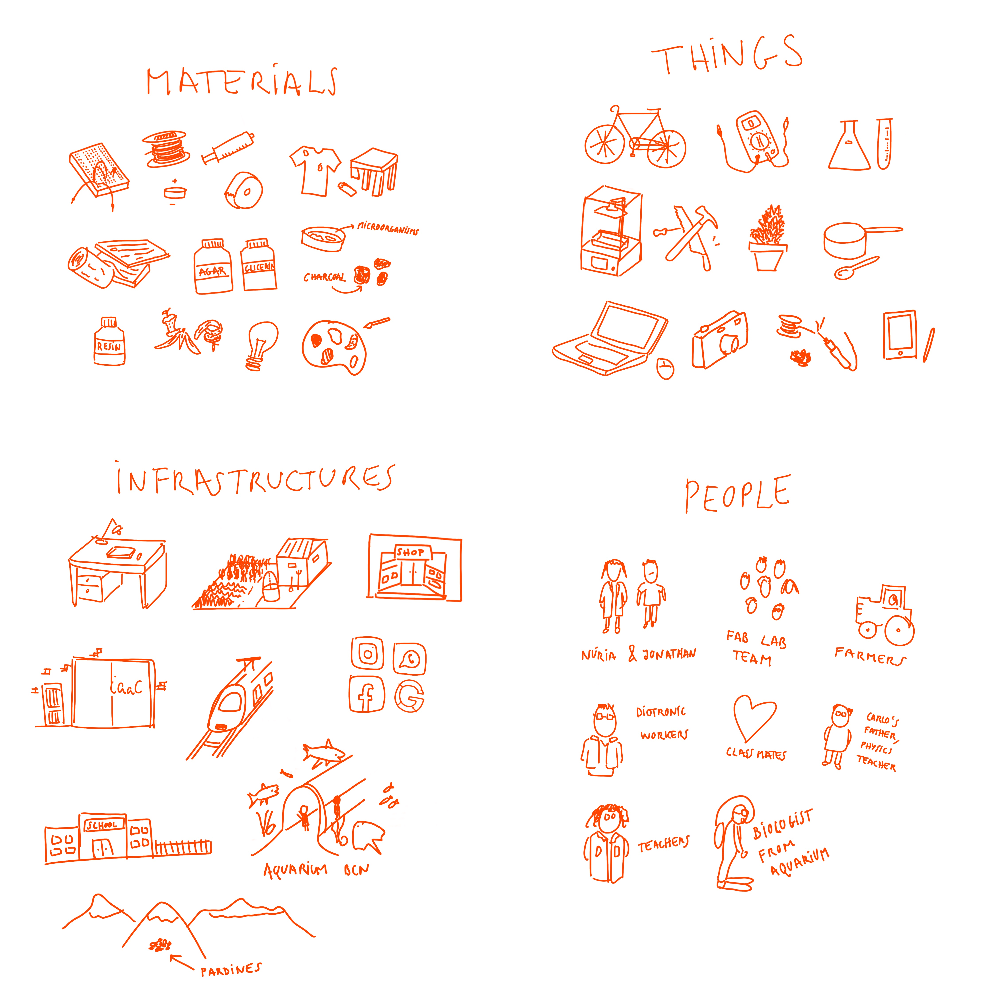
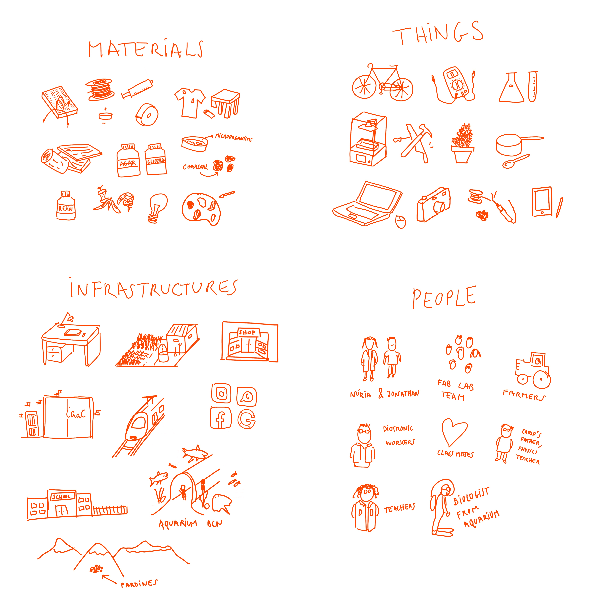

First steps
My new me
I think that every second there is a different me. So I am a concept fluctuating between aspects, of what we call life. So I never consider myself as new or old. Because the idea of modification on the line of time is totally abstract and subjective as each one of us have a different feelings of it. Also, I always gonna be me and never gonna end being me.*
My workspace
After analyse with my Atlas of Weak Signals, and the Bootcamp, I try it to focus on what I actually could have and I have. I chose to don't separate them until it is impossible to get it.


I choose the role 4 for prototyping because allows me to explore more realities, also because always the reality is different than the theoretical branch.
After analyse with my Atlas of Weak Signals, and the Bootcamp, I try it to focus on what I actually could have and I have. I chose to don't separate them until it is impossible to get it.
